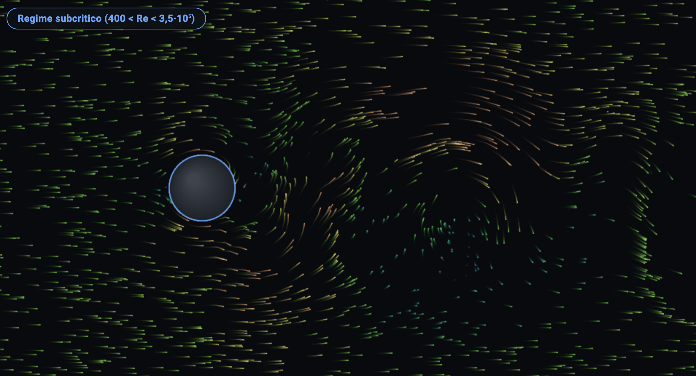
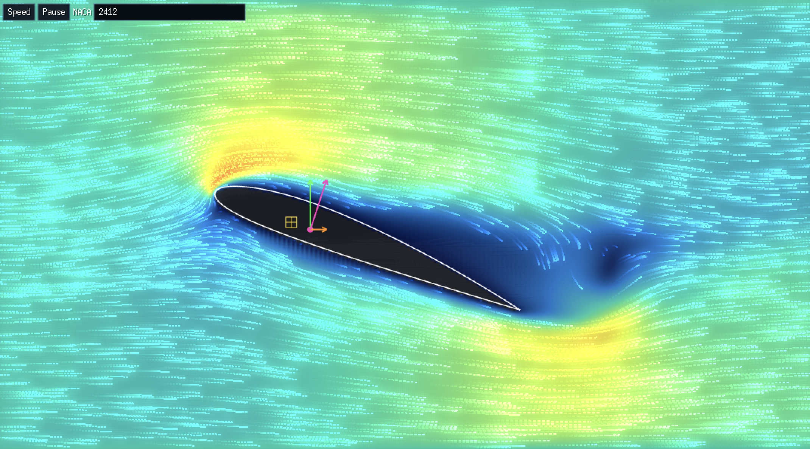

Flusso attorno a un cilindro
Flusso esterno attorno a un cilindro circolare al variare di Re (10⁰–10⁷), con fluido selezionabile, simulazione a particelle, grafico Cd(Re) e descrizione dei regimi di scia.

Profili NACA nel tunnel del vento
Simulazione LBM qualitativa attorno a profili alari NACA: campo di velocità, vorticità, fumo, portanza e resistenza al variare dell'angolo d'attacco.